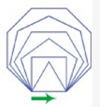
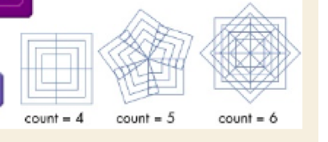
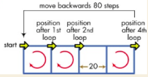
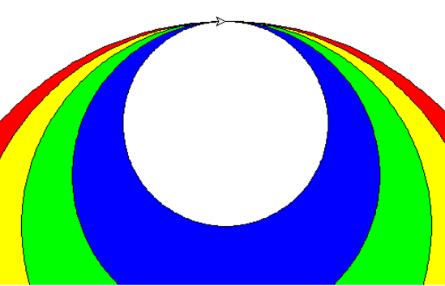

Function
- 4 components: name, parameter, body and return
- parameter: function input
- argument: a value to a parameter
Draw squaren with size
import turtle
pen = turtle.Pen()
pen.pensize(2)
pen.pencolor("red")
def drawSquare(size):
for i in range(4):
pen.forward(size)
pen.left(90)
drawSquare(100)
turtle.done()
Draw square with size, pensize, pencolor,
Draw polygons with various side
Create a program to draw the following shape.

Polygons, side, size, pensize, pencolor
Rotated square
Create a program to rotate a square with a given number.

Draw checker
Create a function to draw checker with number of rows and number of columns.

exercise 1
Please write a function to draw rectangle. parameter: length, width
exercise 2
Please write a function to draw a rectangle. parameter: length, width, x, y, penColor, fillColor
exercise 3
Please write a function to draw a circle. parameter: radius, x, y, penColor, fillColor
exercise 4
Please write a program to draw the following.
